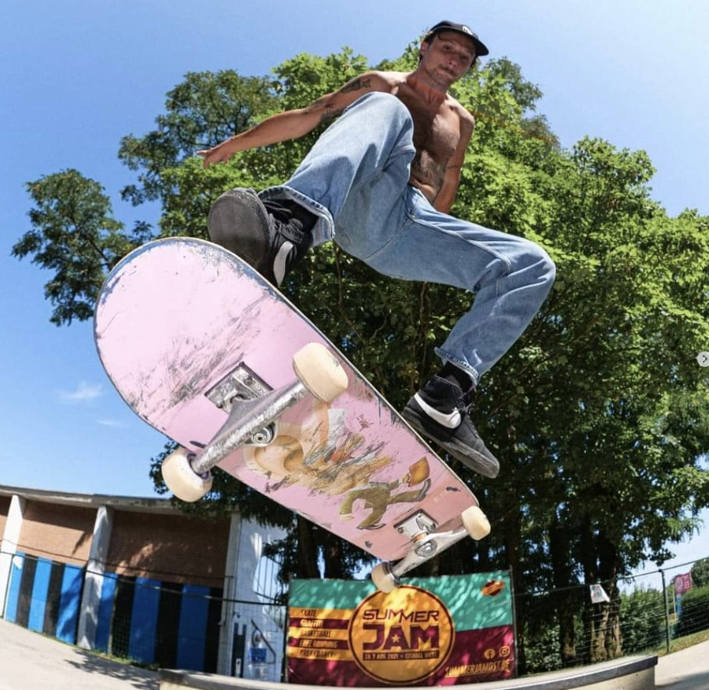
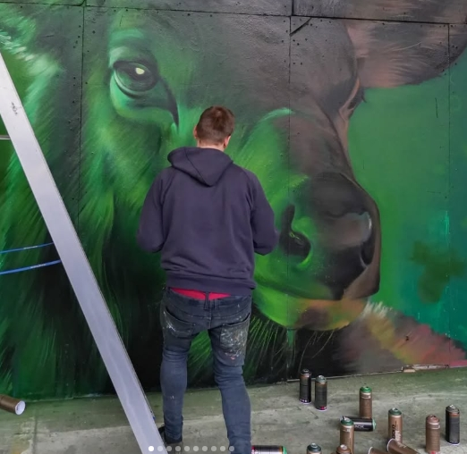
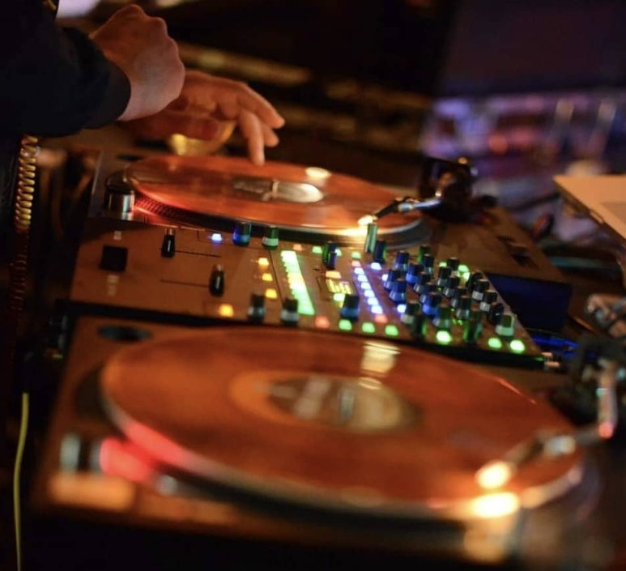
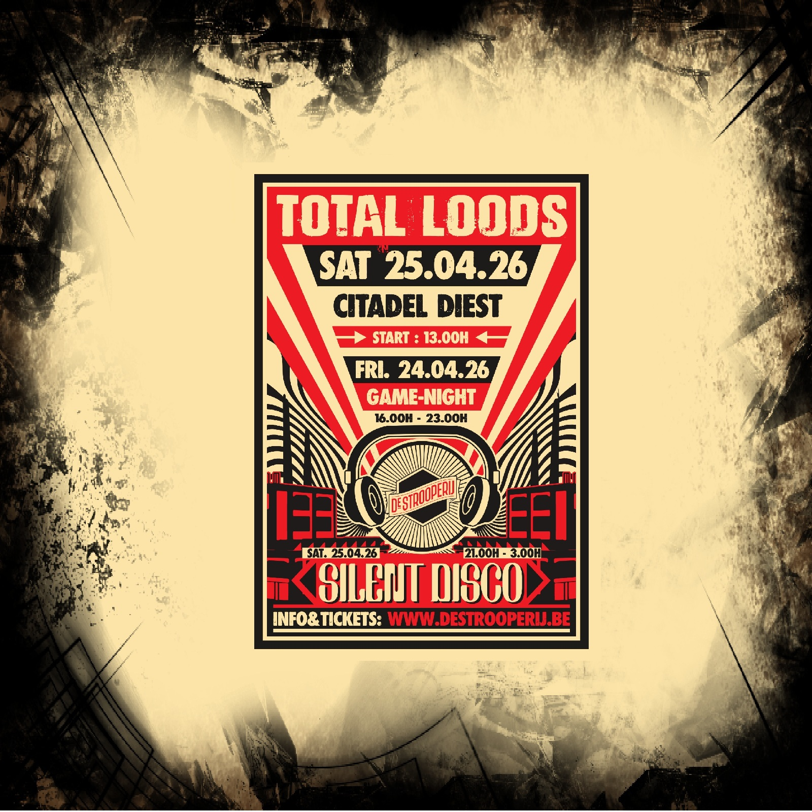
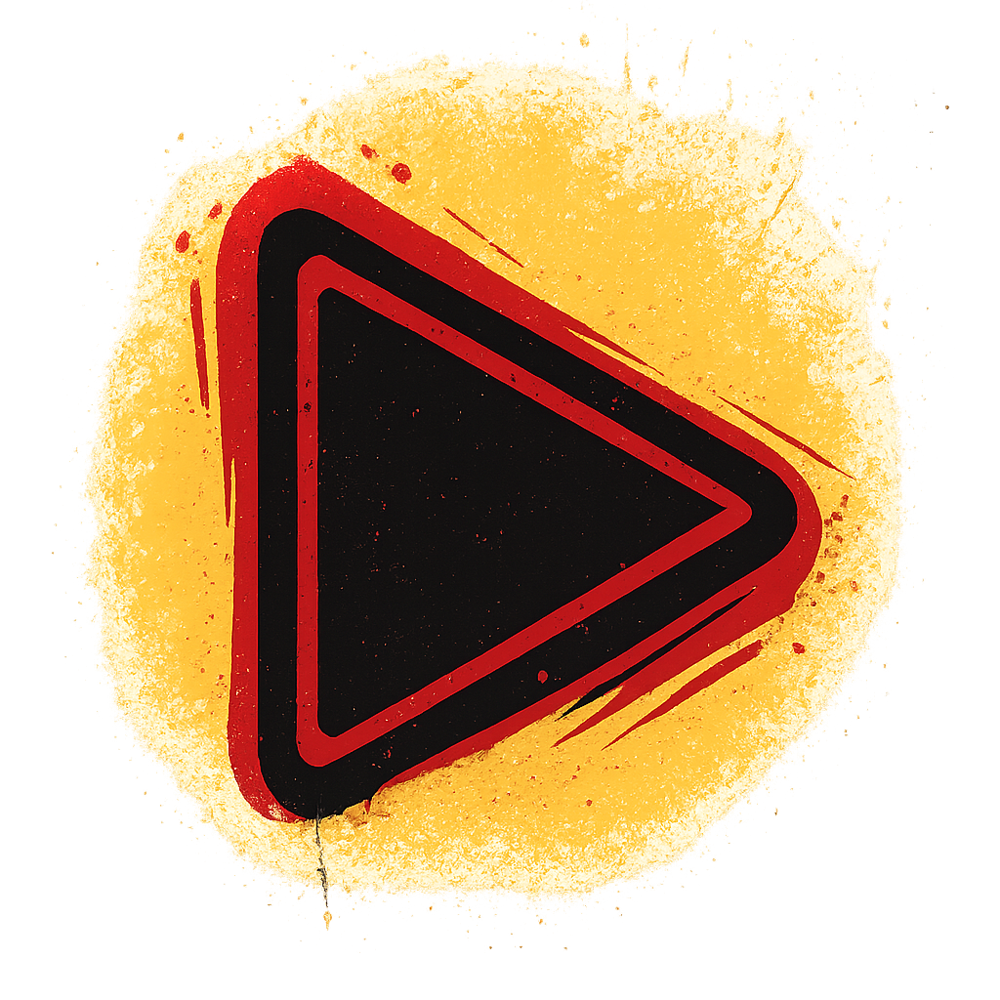
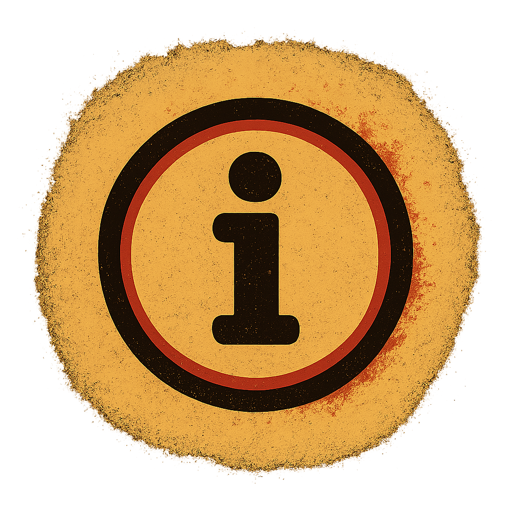
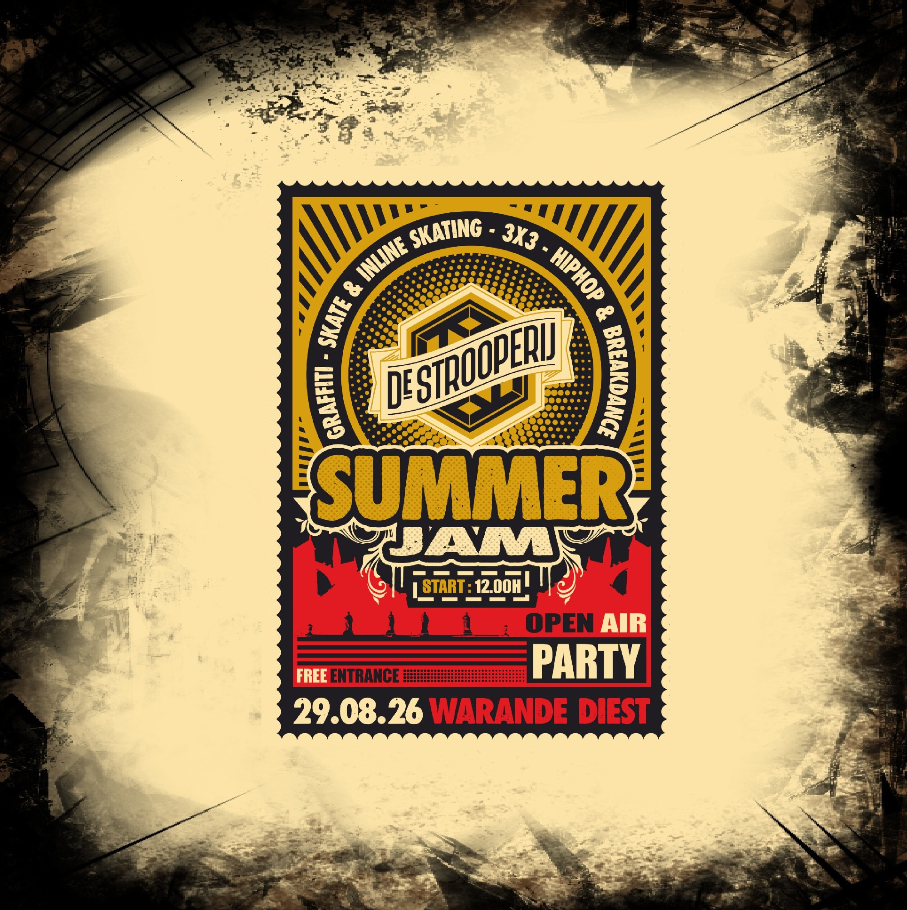
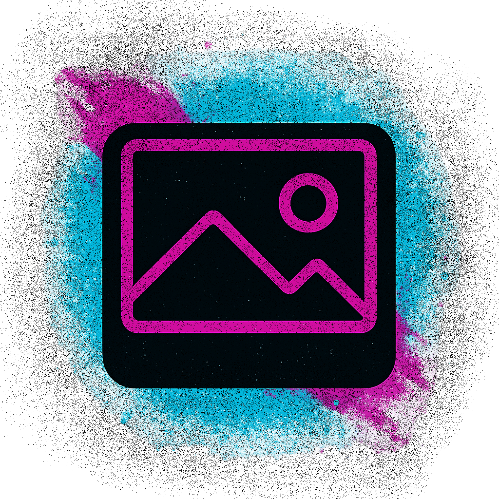
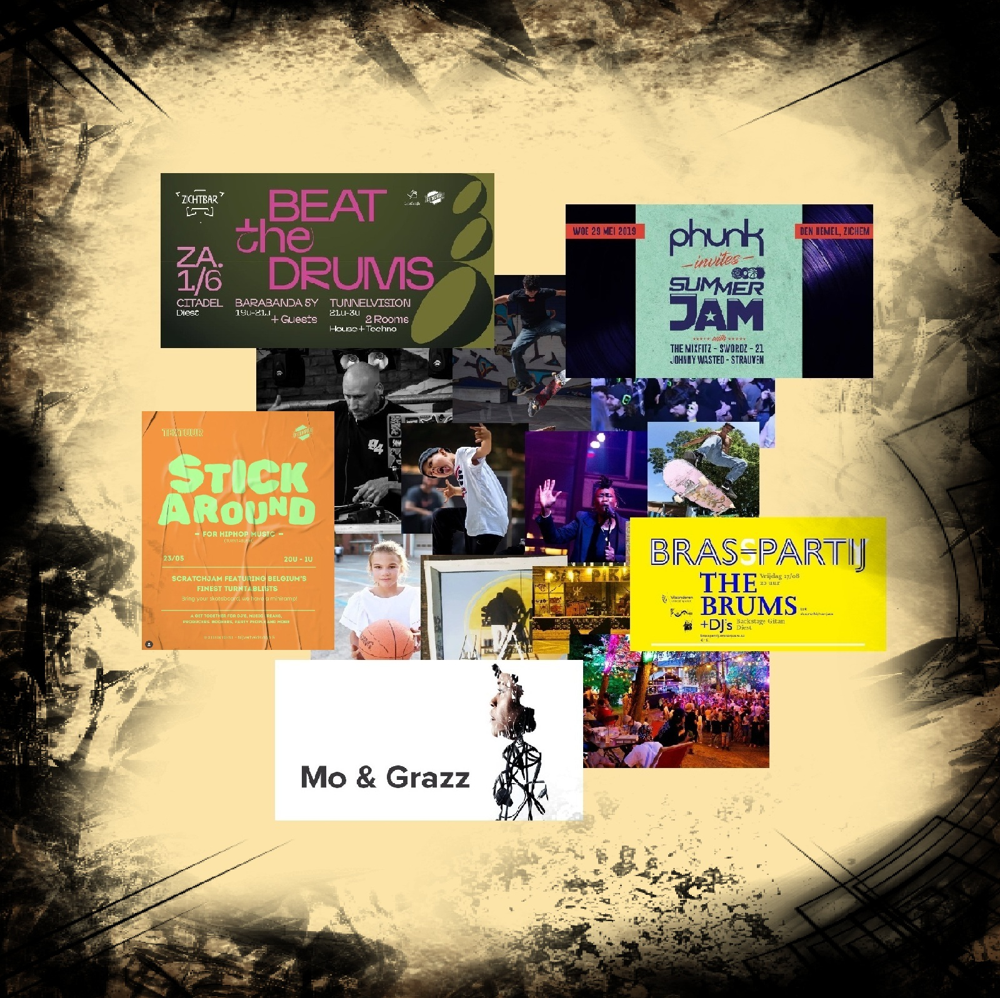
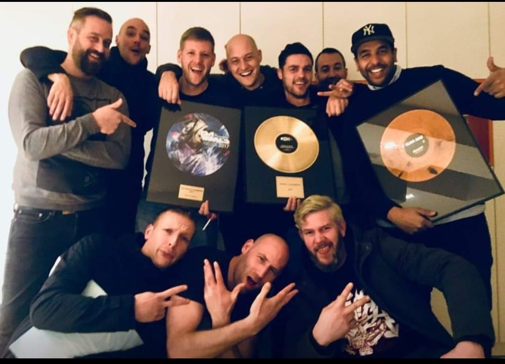

De STrooperij is een vriendengroep met elk hun eigen talenten. We organiseren unieke evenementen in onze geboortestad DieST, met als missie: mensen samenbrengen rond urban sports en cultuur. Sinds de eerste edities van Summer Jam (2002-2007) in het Warandepark, is de passie voor street culture altijd blijven leven. In 2018 bliezen we het concept nieuw leven in, en met groot succes, want in 2023 kregen we de Publieksprijs van de Cultuurraad van DieST. Het draait om creativiteit, sport, muziek, en verbinding – voor jong en oud.

Van skatecontest en 3x3 basketbal tot freerunning – sport is een vaste waarde bij elk event van De STrooperij. Lokale verenigingen zoals de Diestse Sharks en skaters nemen het voortouw in de organisatie. Bewegen, samenwerken en genieten.

Graffiti-jams en live painting vormen een artistieke rode draad. Lokale kunstenaars krijgen een platform om hun creativiteit te tonen en jongeren worden aangemoedigd om te experimenteren. De STrooperij inspireert met kleur en expressie.

Beats, livemuziek en DJ-sets brengen elk event tot leven. Tijdens Silent Disco en andere evenementen krijgen ook jonge, opkomende talenten een podium. De STrooperij gelooft in de kracht van muziek om mensen te verbinden.
In de loods op de Citadel organiseert De Strooperij een laatste editie van Total Loods: een graffitifestival met games, sport en een silent disco. Alle info vind je hier >>> INFO



Terug in het Warandepark – de thuisbasis – brengt Summer Jam opnieuw een dag vol urban sports en muziek. Verwacht een skatecontest, graffiti-jam, 3on3 basketbal, hiphop-breakdance, freerunning en kinderanimatie. ’s Avonds sluiten we af met een spectaculaire feest in het park.


De STrooperij denkt verder dan events. Zo helpen we mee aan de renovatie van de Citadel en ondersteunen we creatieve jongeren via TEXTUUR – een loods aan de Nijverheidslaan die dienstdoet als creatieve uitvalsbasis. Hier kunnen jongeren muziek maken, creëren en experimenteren.


De STrooperij begon als een vriendengroep met een passie voor hun stad DieST. Doorheen de jaren groeide het collectief uit tot een vzw die cultuur en sport toegankelijk maakt voor iedereen. Dankzij de steun van vrijwilligers, verenigingen, sponsors en de stad Diest blijft hun impact groeien. Het draait om kansen geven, samenwerken, en bouwen aan een warme, creatieve community.